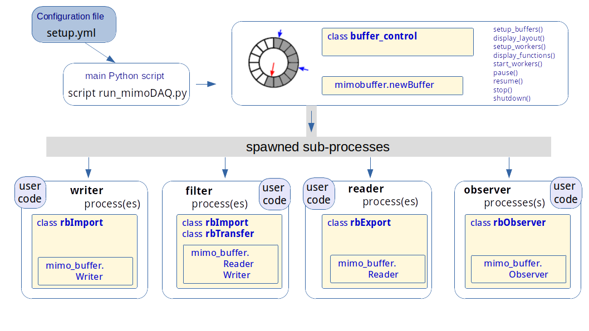
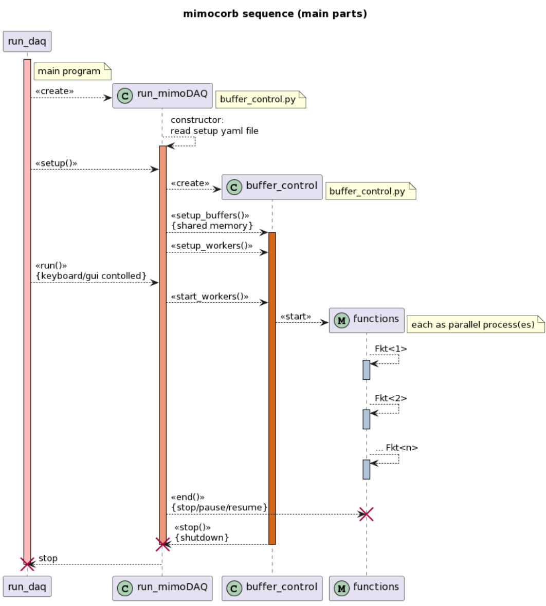
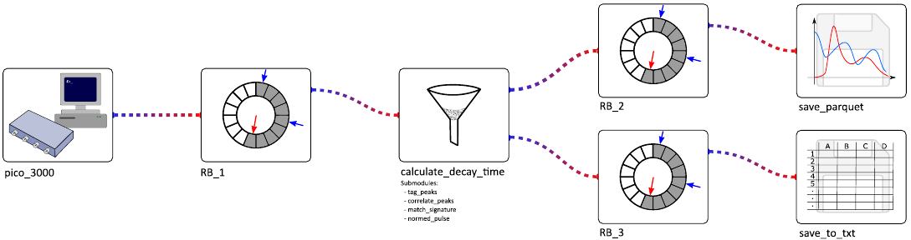
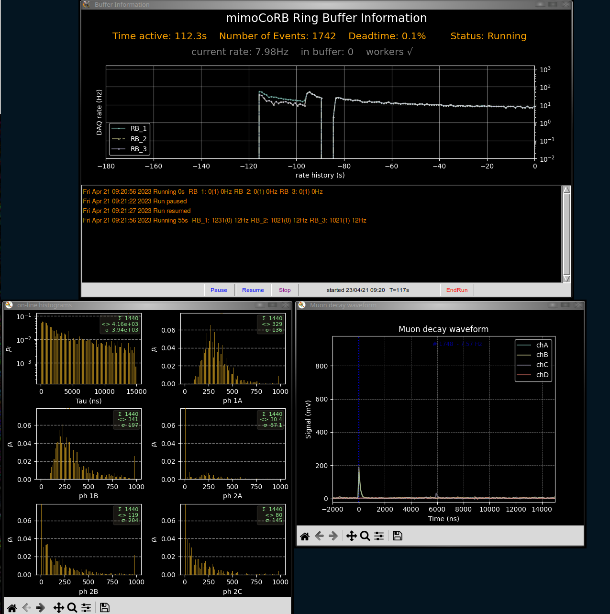

mimoCoRB - multiple-in multile-out Configurable Ring Buffer¶
mimoCoRB - multiple-in multile-out Configurable Ring Buffer: Overview¶
mimoCoRB: multiple-in multiple-out Configurable Ring Buffer
The package mimoCoRB provides a central component of each data acquisition system needed to record and pre-analyse data from randomly occurring processes. Typical examples are waveform data as provided by detectors common in quantum mechanical measurements, or in nuclear physics, particle physics and astro particle physics, e. g. photo tubes, Geiger counters, avalanche photo-diodes or modern SiPMs.
The random nature of such processes and the need to keep read-out dead times low requires an input buffer for fast collection of data and an efficient buffer manager delivering a constant data stream to the subsequent processing steps. While a data source feeds data into the buffer, consumer processes receive the data to filter, reduce, analyze or simply visualize the recorded data. In order to optimally use the available resources, multi-core and multi-processing techniques must be applied. Data consumers may be obligatory ones, i. e. data acquisition pauses if all input buffers are full and an obligatory consumer is still busy processing. A second type of consumers (random consumers or “observers”) receive an event copy from the buffer manager upon request, without interrupting the data acquisition process. Typical examples of random consumers are displays of a subset of the waveforms or of intermediate analysis results.
This project originated from an effort to structure and generalize data acquisition for several experiments in advanced physics laboratory courses at Karlsruhe Institute of Technology (KIT) and has been extensively tested with Ubuntu Linux.
As a simple, stand-alone demonstration, we provide simulated signals as would be produced by a detector for cosmic muons with four detection layers. Occasionally, such muons stop in an absorber between the 2nd and 3rd layer, where they decay at rest and emit a high-energetic electron recorded as a 2nd pulse in one or two of the detection layers. After data acquisition, a search for typical pulse shapes is performed and data with detected double pulses are selected and copied into a second buffer. A third buffer receives data in a reduced format which only contains the parameters of accepted pulses. These data and the waveforms of all double-pulses are finally stored on disk. Such an application is a very typical example of the general process of on-line data processing in modern physics experiments and may serve as a starting point for own projects.
For Developers: Description of components¶
The following paragraphs provide some insight into the inner working of the components of mimoCoRB for interested users and for developers wanting to help improving the package. Application developers should use the more convenient access classes described below to build an application based on the mimoCoRB framework.
In order to decouple the random occurrence of “events” at the start of a data-acquisition chain one needs a buffer capable of rapidly storing new incoming data and delivering a constant data stream to subsequent consumer processes. This is typically implemented as a first-in, first out ringbuffer providing storage space in memory for incoming data, which is released and overwritten by new data when all consuming processes have finished.
As digital filtering of incoming data may be very CPU intensive, multi-processing and multi-core capable components are needed to ensure sufficient compute power to process and analyze all data. mimoCoRB.mimo_buffer implements such a buffer allowing multiple processes to read (“multiple out”) or write (“multiple in”) to a shared buffer space. Access to common memory storage and the synchronization of processes is achieved using the shared_memory, Process and Queue modules from the multiprocessing package.
Because processing of the data, i. e. digital filtering, selection, compression and storage or real-time visualization of the data can be a complex workflow, data buffers may be arranged in chains where one or several reader processes associated to a buffer write to one or several output buffer(s).
The central component takes care of memory management and access control provided by the class newBuffer. To control the data flow in a full data acquisition suite, three types of access are foreseen, implemented as Writer, Reader and Observer classes. Readers of the same type are grouped together for multi-processing of compute-intense tasks and form a Reader-group. Observers receive only a sub-set of the data and are mainly intended to be used for visual inspection or graphical representation of samples of the recorded or processed data.
Processes for data provisioning from front-end hardware or from other sources, like disk files, web streams or simulation, rely on the Writer class; similarly, processes reading data for filtering and transfer to subsequent buffers or to analyse, transform or extract data to storage media use the Reader class. Note that the buffer manager ensures that every slot assigned to a Reader (or a group of Readers) is actually processed; therefore, input to a buffer blocks if the buffer is filled up completely. The Writer class resumes data input as soon as a Reader or member of a Reader-group has finished processing and thus freed a slot in the buffer.
Multiprocessing is enabled by use of the shared_memory module of the multiprocessing package available since Python 3.8 for direct access to shared memory across processes. Other modules of the package (Process, Lock, Event, and SimpleQueue or Queue) are used to create and control sub-processes and for signaling and message or data exchange across processes.
The format of data stored in the buffers is based on structured numpy arrays with (configurable) field names and numpy dtypes. Each buffer entry is also associated with a unique event number, a time stamp and a deadtime fraction to be provided by the initial data producer. The deadtime accounts for inefficiencies of the data acquisition due to processing in mimoCoRB. These metadata are set by the initial producer and must not be changed at a later stage in the processing chain.
Simple application example¶
An application example of mimo_buffer is shown below; it is also provided as a unit test. The set-up is as follows:
Two ring buffers are defined:
input Buffer RB_1: 10 ch x 1024 slots (int32)
output Buffer RB_2: 10 ch x 2 slots/ch (float64)
Simple data is filled into RB_1, copied and extended by a process writing data into RB_2, and finally a reader process to check integrity and completeness of the data. The most complex part of the code is in function run_control(), which demonstrates how to set up the buffers, define Reader and Writer instances and start the parallel processes for generating, processing and reading the data.
The example including comment lines for explanation is shown here:
import time
import unittest
import numpy as np
from multiprocessing import Process, Value
from mimocorb import mimo_buffer as bm
# global variables
N_requested = 1000 # number of data injections ("events")
Time_tick = 0.001 # time between events
Ncpu1 = 2 # number of parallel analyzer processes
def data_generator(sink_dict):
"""writes continuously rising integers to buffer specified in sink_dict
"""
sink = bm.Writer(sink_dict)
n=0
# inject data
for x in range(N_requested):
buffer = sink.get_new_buffer() # get new buffer and pass last item
# random wait for next data item
time.sleep(-Time_tick*np.log(np.random.rand() ))
# fill "data"
n += 1
buffer[:] = n
# process last data item
sink.process_buffer()
def analyzer(source_dict, sink_dict):
"""read from source and write first element and a time difference to sink
"""
source = bm.Reader(source_dict)
sink = bm.Writer(sink_dict)
start_time = time.time()
while True:
input_data = source.get()
output_data = sink.get_new_buffer()
# process data
output_data[0] = input_data[0]
# mimick processing time
time.sleep(2*Time_tick)
output_data[1] = time.time() - start_time
#
sink.process_buffer()
def check_result(source_dict, res):
"""reads RB_2 and sum up the integer content
sum is returned as shared memory Value-object
"""
source = bm.Reader(source_dict)
sum_rb = 0
while True:
input_data = source.get()
res.value +=int(input_data[0])
def run_control():
"""Setup buffers, start processes and shut_down when 1st writer done
"""
# Create ring buffers: #2: 10 channel, 2 value per channel
# (1: buffer content; 2: time difference as int)
# d_type = [('chA', np.float)] #not necessary: always the same type
generator_buffer = bm.NewBuffer(10, 1, np.int32)
eval_buffer = bm.NewBuffer(10, 2, np.float32)
# create readers first
source_dic_gen = generator_buffer.new_reader_group()
source_dic_eval = eval_buffer.new_reader_group()
# Create worker processes (correct sequence: first action as last)
process_list = []
# evaluation to test ring buffer behavior
result = Value('i', 0) # int variable in shared meomry
process_list.append(Process(target=check_result,
args=(source_dic_eval, result)))
# data transfer between the 2 buffers: generator_buffer -> eval_buffer
sink_dic_eval = eval_buffer.new_writer()
# work with all cpu's requested
number_of_workers = Ncpu1
for i in range(number_of_workers):
process_list.append(Process(target=analyzer,
args=(source_dic_gen, sink_dic_eval)))
# fill buffer (generator_buffer) with data first
sink_dic_gen = generator_buffer.new_writer()
process_list.append(Process(target=data_generator,
args=(sink_dic_gen,)))
for p in process_list:
p.start()
run_active = True
while run_active:
run_active = False if process_list[-1].exitcode==0 else True
time.sleep(0.1) # wait
time.sleep(0.1) # some grace-time for readers to finish
generator_buffer.shutdown()
eval_buffer.shutdown()
del generator_buffer, eval_buffer
for p in process_list:
p.join()
return result.value
class RPTest(unittest.TestCase):
def test_process(self):
# start python test module and check result
a = run_control()
expected_result = N_requested*(N_requested+1)//2
# expected result: sum(i); i = 1, N_requested
self.assertEqual(a, expected_result)
if __name__ == "__main__":
unittest.main(verbosity=2)
For application developers: Access Classes in the module buffer_control¶
To facilitate user interaction with the buffer manager, a set of additional classes is provided in the module buffer_control to set-up and manage cascades of ringbuffers and the associated functions for filling, filtering and extracting data. These classes are most interesting for application developers wanting to build upon the mimoCoRB framework.
The classes are:
- class buffer_control:
Set-up and management of ringbuffers and associated sub-processes. This is the overarching class with access to all created buffers and sub-processes.
- class rbImport:
Read data from source (e.g. a front-end like a PicoScope USB oscilloscope, or from a file or simulation) and import data and metadata in a mimo_buffer by calling user-supplied Python generator (i.e. via ‘yield’). In this approach, mimiCoRB “pulls” data.
- class rbPut:
Read data from source (e.g. a front-end like a PicoScope USB oscilloscope, or from a file or simulation) and put data in a mimo_buffer by calling a Python function, thus pushing the data under control of the reading application. This method is useful in cases where the application providing the data has its own event loop (driving e. g. its own graphical user interface).
- class rbTransfer:
Read data from a mimo_buffer, filter and/or reformat data and write to output mimo_buffer(s). Data is provided as the argument to a user-defined filter function, returning None if data is to be discarded, a number if data is to be copied to another buffer, or - optionally - a list of transformed data records produced from processed input data. If such data are provided, a respective number of ringbuffers as destination must be configured.
- class rbExport:
Read data from mimo_buffer and analyze (with user-supplied code), without writing to another ringbuffer. Data are provided to the user function as a Python generator in the __call__() method of the class yielding a tuple of data and metadata.
- class rbObserver
Deliver data from a buffer to an observer process. A tuple (data, metadata) is provided by a Python generator implemented in the __call__() method of the class.
- class rb_toTxtfile:
Save mimo_buffer data to a file in csv-format. The header line of this file contains the keys of the respective columns, which are derived from the datatype of the structured ringbuffer array. Aliases for improved clarity can be provided in the configuration file.
- class rb_toParquetfile:
Save mimo_buffer data to an archive in tar format; each data record is packed in Parquet format.
- class run_mimoDAQ:
Setup and run a Data Acquisition suite with the mimoCoRB buffer manager. The layout of ringbuffers and associated functions are defined in a configuration file in yaml format. All configured functions are executed as worker processes in separate sub-processes and therefore optimal use is made of multi-core architectures.
- class bufferinfoGUI:
- A graphical interface showing buffer rates and status information and
providing some control buttons interacting with the run_mimoDAQ class.
These classes shield much of the internal complexity from the user, who can thus concentrate on writing the pieces of code needed to acquire and process the data. The access classes expect as input lists of dictionaries with the parameters of buffers to read from (source_list), to write to (sink_list) or to observe (observe_list). An additional dictionary (config_dict) provides the parameters needed for the specific functionality, for example names of functions to read, filter or manipulate data or the names of target files. The interface for passing data between the user-defined functions and ringbuffers relies on Python generators (i.e. the yield instruction).
The overarching class buffer_control provides methods to setup buffers and worker processes and to control the data acquisition process. The methods collected in the class run_mimoDAQ, in particular the function run_mimoDAQ, contains the code needed to run an instance of a data-acquisition suite defined in a configuration file specifying the ring buffers and associated, user-defined functions for data provisioning, filtering and storage. run_mimoDAQ is controlled either by keyboard commands of from a graphical user interface; pre-defined conditions on the total number of events processed, the duration of the data taking run or finishing of the writer process to the first buffer due to source exhaustion can also be defined to end data taking. The class structure and dependencies are shown in the figure below.
{kind=link}
A sequence diagram of a a typical application, shown below, illustrates the interplay and dependencies of the classes described above. The script run_daq.py creates an instance of run_mimoDAQ and starts its run()-method. The interaction with the user-supplied filter functions is handled by methods of the class buffer_control.
{kind=link}
For complex setups and longer data-taking periods it is important to gain a quick overview of the status of all buffers and to monitor long-term stability. Therefore, a graphical display with the processing rate of all buffers is provided by the class bufferinfoGUI. A text window receives frequent updates of the number of events processed by each buffer and of the buffer fill-levels. Clickable control buttons send information via a dedicated command queue to the calling process run_mimoDAQ and enable pausing, resuming and controlled ending of the data-acquisition processes.
The suggested structure of the project work-space for mimoCoRB applications is as follows:
|--> <user working directory> # the main configuration script resides here
|
| --> modules # project-specific, user-supplied python code
| --> config # configuration files in yaml format
| --> target # output of data-acquisition run(s)
For illustration and as a starting point for own applications, a stand-alone example is provided as part of the package, as described in the following section.
Application examples¶
The subdirectory examples/ contains some complete application use cases based on input waveforms that are generated by a simulator in real-time.
The central piece of every mimoCoRB application is the configuration file; examples of different complexity are provided in examples/*_setup.yaml. Code snippets for data input, filtering and ouput as well as configuration files are provided in the subdirectories examples/modules/ and examples/config/, respectively.
Waveform data, as provided by, for example, a multi-channel digital oscilloscope, are generated and filled into the first one of a cascaded set of ringbuffers and passed on to subsequent buffer stages depending on filter conditions. Data in the last buffer are recorde to disk. The configuration files and the recorded data files are stored in the subdirectory examples/target/<projectname>_<date_and_time>.
All examples run stand-alone and use as input simulated waveform data of short pulses as they arise e. g. in scintillation or semi-conductor detection devices for single particles. The simulated physics process corresponds to signatures produced by cosmic muons penetrating several layers of scintillator material.
Simple Example
A very simple example consists of recording two input channels from two redundant detectors. The buffer configuration is defined in the file examples/demo_setup.yaml, shown here:
# Configuration for recording two channels with mimoCoRB
# -----------------------------------------------------
#
# illustrates the structure of a mimiCoRB setup file:
# the blocks
# - RingBuffer:
# - Functions:
# must be present.
# The names RB_i and FKT_i with i = 1, 2, 3, ... are fixed.
# Optionally, a block
# - FunctionConfigs:
# can be specified to provide the configuration for each one of the
# assigned functions. These may also be specified in a separate
# configuration file for all functions, or in dedicated files for
# each function using the keys "config_file:" in the FTK_main section
# or in the FKT_i: sections, respectively.
#
# In this example, two buffers are configured:
# - RB_1 for raw waveforms
# - RB_2 for derived pulse parameters
#
# Data from RB_2, the result buffer, are saved to a file in csv (text) format.
# Data from RB_1 are also passed to an obsever process driving a real-time display,
# and are also passed to a Reader process driving a real-time histogram display.
#
# Notes:
#
# 1. additional config files controlling the user functions are
# located in the subdirectory config/
#
# 2. necessary application-specific user code is located
# in the subdirectory modules/
#
# ----------------------------------------------------------------------------
#
RingBuffer:
# define ring buffers
- RB_1:
# raw input data buffer (from picoScope, file or simulation)
number_of_slots: 16
channel_per_slot: 500
data_type:
1: ['chA', "float32"]
2: ['chB', "float32"]
- RB_2:
# buffer with correct signature double pulse parameters
number_of_slots: 16
channel_per_slot: 1
data_type:
data_type:
1: ['chA_height', "float32"]
2: ['chA_position', "int32"]
3: ['chA_integral', "float32"]
4: ['chB_height', "float32"]
5: ['chB_position', "int32"]
6: ['chB_integral', "float32"]
Functions:
# define functions and ringbuffer assignment
- Fkt_main:
# runtime: 60 # desired runtime in seconds
runevents: 1000
config_file: "config/spectrum_config.yaml"
- Fkt_1:
## for simulation source
file_name: "modules/simul_source"
fkt_name: "simulation_source"
## for data from file
#file_name: "modules/file_source"
#fkt_name: "tar_parquet_source"
num_process: 1
RB_assign:
RB_1: "write"
- Fkt_2:
file_name: "modules/exporters"
# fkt_name: "save_parquet"
fkt_name: "drain"
num_process: 1
RB_assign:
RB_1: "read" # waveform to save
- Fkt_3:
file_name: "modules/spectrum_filter"
fkt_name: "find_peaks"
num_process: 2
RB_assign:
RB_1: "read"
RB_2: "write"
- Fkt_4:
file_name: "modules/exporters"
# fkt_name: "save_to_txt" # save data to text
fkt_name: "drain" # no saving of data
num_process: 1
RB_assign:
RB_2: "read"
The example coming with this package contains two more convenience functions, one for an observer process displaying a random sample of waveforms in an oscilloscope display, and a second one for on-line analysis and histogramming of buffer data. The necessary addendum to the configuration looks as follows:
# --- the following functions are optioal
- Fkt_5:
file_name: "modules/plot_waveform"
fkt_name: "plot_waveform"
num_process: 1
RB_assign:
RB_1: "observe"
- Fkt_6:
file_name: "modules/plot_histograms"
fkt_name: "plot_histograms"
num_process: 1
RB_assign:
RB_2: "read" # pulse parameters
These additional functions cover very general uses cases and rely on the modules mimocorb.plot_buffer and mimocorb.histogram_buffer, which provide animated displays of waveforms similar to an oscilloscope and a histogram package for life-updates of frequency distributions of scalar variables.
The last yaml block contains configuration parameters needed for some of the functions.
FunctionConfigs:
# configuration of functions provided by mimoCoRB
save_to_txt:
filename: "spectrum"
save_parquet:
filename: "spectrum"
drain: # has no parameters, empty field is sufficient
key:
As an alternative, configuration parameters for functions can also be provided in a separate yaml file in the block FKT_main. (line config_file: “config/spectrum_config.yaml”). It is also possible to specify configuration files for each of the functions individually in the respective block FKT_i, i=1,2, …
The declared functions must support a unique calling interface and are started as sub-processes. Lists of dictionaries provide the necessary information to connect to the buffer manager via the Writer, Reader or Observer classes of the package. This information comprises the pointer to the shared buffer manager as well as pointers to instances of the functions Event() or Queue() from the multiprocessing package to enable communication and data transfers across processes. A further dictionary (config_dict) provides the function-specific configuration parameters discussed previously. The keyword dictionary rb_info specifies whether writer, reader or observer functionality is required. It contains a copy of the ring-buffer assignment block („RB_assign:”) from the main setup file on function level. Its purpose is to facilitate the ring-buffer access part within a function or class.
The function interface looks as follows:
def <function_name>(
source_list=None, sink_list=None, observe_list=None, config_dict=None, **rb_info):
This interface must be respected by any user function. The argument list must also be passed to instances of the access classes rbImort, rbExport, rbTransfer or rbObserve. An example of a user fuction in the directory modules/ to write buffer data to a text file is shown below:
"""Module exporters to handle file I/O for data in txt and parquet format
This module relies on classes in mimocorb.buffer_control
"""
from mimocorb.buffer_control import rb_toTxtfile, rb_toParquetfile
def save_to_txt(source_list=None, sink_list=None, observe_list=None, config_dict=None, **rb_info):
sv = rb_toTxtfile(source_list=source_list, config_dict=config_dict, **rb_info)
sv()
Running the example with the command
../run_daq.py demo_setup.yaml
yields the following output on screen:
*==* script ../run_daq.py running
2 buffers created... List of buffers
RB_1 16 500
RB_2 16 1
List of functions
FKT_1 simul_source (1) {'RB_1': 'write'}
FKT_2 find_peaks (2) {'RB_1': 'read', 'RB_2': 'write'}
FKT_3 save_to_txt (1) {'RB_2': 'read'}
FKT_4 plot_waveform (1) {'RB_1': 'observe'}
FKT_5 plot_histograms (1) {'RB_2': 'read'}
Two buffers are created in this case, RB1 _1 and RB_2. RB_1 with two channels with 500 samples each is the input buffer. RB_2 contains 6 scalar variables and is the output buffer, which is filled by the function find_peaks with two active workers. The functions save_to_txt and plot_histograms read from this buffer and store data to disk or show histograms, respectively. The function plot_waveform takes random samples from RB_1 and displays the raw waveform data.
This example serves as a convenient starting point for own application development. The code in simul_source.py, shown below, is a very general example for data input. Only the function pulseSimulator() needs to be replaced by a function providing data from your own source. The code is shown here:
def simulation_source(source_list=None, sink_list=None, observe_list=None, config_dict=None, **rb_info):
"""
General example for data import from external source
(here: generation of simulated data with module pulseSimulator)
Uses class mimocorb.buffer_control/rbImport to interface to the
newBuffer and Writer classes of the package mimoCoRB.mimo_buffer
mimiCoRB interacts with this code via a generator (*yield_data()*),
which itself received data via the *__call__* function of the class
*dataSource* providing the input data. Configuration parametes
in the dictionary *config_dict* are passed to this class during
initialistation. Parameters of the configured buffers are set after
after initialisation.
This example may serve as a template for other data sources
"""
# define and instantiate external data source
source = dataSource(config_dict)
def yield_data():
"""generate simulated data, called by instance of class mimoCoRB.rbImport"""
event_count = 0
while True:
data = source()
# deliver pulse data (and no metadata - these are added by rbImport)
yield (data, None)
event_count += 1
# get buffer configuration
sink_dict = sink_list[0]
number_of_channels = len(sink_dict["dtype"])
number_of_values = sink_dict["values_per_slot"]
channel_names = [sink_dict["dtype"][i][0] for i in range(number_of_channels)]
# consistency check
if "number_of_samples" not in config_dict:
pass
else:
if number_of_values != config_dict["number_of_samples"]:
print("! Config Error: requested number of samples does not match buffer size !")
sys.exit("requested number of samples does not match buffer size !")
source.init(number_of_channels, number_of_values, channel_names)
# instantiate buffer manager interface
rbImporter = rbImport(config_dict=config_dict, sink_list=sink_list, ufunc=yield_data, **rb_info)
rbImporter.logger.info(f"sub-process {__name__} started")
# start __call__ method of rbImport instance
rbImporter()
Complex Example
In the second, more complex example discussed here we consider multiple pulses on the same channels, where, e. g. the first pulse originates from a detected muon and the second, later one from a decay electron of a muon that has been stopped in or near a detection layer.
The raw data are analyzed, and accepted data with a double-pulse signature are selected and directly passed on to a second ring buffer. A third buffer contains only the information on found signal pulses; a result file in csv format contains the data extracted from this buffer.
A graphical representation of the set-up is shown in the figure below [source: Master’s Thesis Christoph Mayer, ETP 2022]. Note that the oscilloscope as the data-acquisition front-end is replaced by a signal simulation in the example provided.
{kind=link}
The buffer layout and the associated functions are defined in the main configuration file lifetime_setup.py, which serves as the input to the execution script run_daq.py in the top-level directory of the package. The python files simul_source.py, liftime_filter.py and exporters.py contain the user code for data generation, analysis and filtering and extraction of the finally accepted data to disk files. The .yaml files simulation_config.yaml and save_lifetimes.yaml contain configurable parameters provided to these functions.
This example is executed form the directory examples/ by entering:
../run_daq.py lifetime_setup.yaml
Again, the screen output gives an overwiew of the generated buffers and the functions writing to and reading from them:
*==* script ../run_daq.py running
3 buffers created... List of buffers
RB_1 128 4250
RB_2 128 4250
RB_3 32 1
List of functions
FKT_1 simul_source (1) {'RB_1': 'write'}
FKT_2 calculate_decay_time (2) {'RB_1': 'read', 'RB_2': 'write', 'RB_3': 'write'}
FKT_3 save_to_txt (1) {'RB_3': 'read'}
FKT_4 save_parquet (1) {'RB_2': 'read'}
FKT_5 plot_waveform (1) {'RB_2': 'observe'}
FKT_6 plot_histograms (1) {'RB_3': 'read'}
The input yaml file for this example looks as follows:
# Application example for mimoCoRB
# --------------------------------
#
# three buffers:
# - RB_1 for (simuated) raw waveforms
# - RB_2 for selected double-pulses
# - RB_3 for derived pulse parameters
#
# data from RB_2 and RB_3 are saved to files in tarred parquet format
# or in text format.
#
# data from RB_2 are passed to an observer process driving a real-time display
#
# Notes:
#
# 1. additional config files controlling the user functions are
# located in the subdirectory config/
# 2. user necessary application-specific user code is located
# in the subdirectory modules/
#
# ----------------------------------------------------------------------------
#
# general control options
output_directory: target # directory to store output data
GUI_control: true # control daq via Grapical User Interface
KBD_control: true # control daq via KeyBoarD
RingBuffer:
# define ring buffers
- RB_1:
# raw input data buffer (waveforms from PicoScope, file_source or simulation)
number_of_slots: 128
channel_per_slot: 4250
data_type:
1: ['chA', "float32"]
2: ['chB', "float32"]
3: ['chC', "float32"]
4: ['chD', "float32"]
- RB_2:
# buffer with accepted signatures (here double-pulses)
number_of_slots: 128
channel_per_slot: 4250
data_type:
1: ['chA', "float32"]
2: ['chB', "float32"]
3: ['chC', "float32"]
4: ['chD', "float32"]
- RB_3:
# buffer with pulse parameters (derived from waveforms)
number_of_slots: 32
channel_per_slot: 1
data_type:
1: ['decay_time', "int32"]
3: ['1st_chA_h', "float32"]
4: ['1st_chB_h', "float32"]
5: ['1st_chC_h', "float32"]
6: ['1st_chA_p', "int32"]
7: ['1st_chB_p', "int32"]
8: ['1st_chC_p', "int32"]
9: ['1st_chA_int', "float32"]
10: ['1st_chB_int', "float32"]
11: ['1st_chC_int', "float32"]
12: ['2nd_chA_h', "float32"]
13: ['2nd_chB_h', "float32"]
14: ['2nd_chC_h', "float32"]
15: ['2nd_chA_p', "int32"]
16: ['2nd_chB_p', "int32"]
17: ['2nd_chC_p', "int32"]
18: ['2nd_chA_int', "float32"]
19: ['2nd_chB_int', "float32"]
20: ['2nd_chC_int', "float32"]
21: ['1st_chD_h', "float32"]
22: ['1st_chD_p', "int32"]
23: ['1st_chD_int', "float32"]
24: ['2nd_chD_h', "float32"]
25: ['2nd_chD_p', "int32"]
26: ['2nd_chD_int', "float32"]
Functions:
# define functions and assignments
- Fkt_main:
config_file: "config/simulation_config.yaml"
- Fkt_1:
file_name: "modules/simul_source"
fkt_name: "simul_source"
num_process: 1
RB_assign:
RB_1: "write"
- Fkt_2:
file_name: "modules/lifetime_filter"
fkt_name: "calculate_decay_time"
num_process: 2
RB_assign:
RB_1: "read" # input
RB_2: "write" # waveform to save (if double pulse was found)
RB_3: "write" # pulse data
- Fkt_3:
file_name: "modules/exporters"
fkt_name: "save_to_txt"
config_file: "config/save_lifetime.yaml"
num_process: 1
RB_assign:
RB_3: "read" # pulse data
- Fkt_4:
file_name: "modules/exporters"
fkt_name: "save_parquet"
num_process: 1
RB_assign:
RB_2: "read" # waveform to save
The functions for plotting result variables and for histogramming are not shown, but also contained in the example configuration provided as part of the package, in the same way as explained for the first example.
In addition to the remarks concerning configuration files, it is worth noticing here that a dedicated configuration file is specified in a separate yaml file for function Fkt_3. This possibility is particularly useful if the same function code is used to handle data from different buffers, e.g. the file name and special formatting for writing buffer contents to a file in csv format.
Even more complex example
A similar, but even more complex case with two streams going to different output buffers and files is specified in the file spin_setup.yaml. Starting this example with > ../run_daq.py spin_setup.yaml leads to the following terminal output:
*==* script ../run_daq.py running
4 buffers created... List of buffers
RB_1 128 4250
RB_2 128 4250
RB_3 32 1
RB_4 32 1
List of functions
FKT_1 simul_source (1) {'RB_1': 'write'}
FKT_2 calculate_decay_time (2) {'RB_1': 'read', 'RB_2': 'write', 'RB_3': 'write', 'RB_4': 'write'}
FKT_3 save_to_txt (1) {'RB_3': 'read'}
FKT_4 save_to_txt (1) {'RB_4': 'read'}
FKT_5 save_parquet (1) {'RB_2': 'read'}
FKT_6 plot_waveform (1) {'RB_2': 'observe'}
FKT_7 plot_histograms (1) {'RB_3': 'read'}
FKT_8 plot_histograms (1) {'RB_4': 'read'}
Running 260s RB_1: 76409(0) 302Hz RB_2: 6118(0) 19Hz RB_3: 2952(1) 9.99Hz RB_4: 3166(1) 8.99Hz
A screenshot of a data-acquisition run with input from simulated data is shown in the figure below.
{kind=link}
Module Documentation¶
mimo-ringbuffer:
Module implementing a multiple-in multiple-out ringbuffer appropriate for multi-core multiprocessing.
The ringbuffer creation and management is handled by the class NewBuffer.
Buffer access is managed by the``Reader``, Writer and Observer classes.
classes:
NewBuffer: create a new ringbuffer, assign writer(s) and reader(s) or observer(s)
methods:
new_writer
new_reader_group
new_observer
buffer_staus
Writer: write elements into a ringbuffer
Reader: read all elements from a ringbuffer
Observer: read selected elements from a ringbuffer.
- class mimocorb.mimo_buffer.NewBuffer(number_of_slots, values_per_slot, dtype, debug=False)¶
Class to create a new ringbuffer object according to the ‘FIFO’ principle (first-in first-out).
Memory shares, IPC queues, lock and event objects as well as background threads are defined for the multiprocessing ringbuffer management. Methods are provided to build the setup dictionaries (necessary parameter objects) for the
Reader,WriterorObserverinstances, respectively. Further, methods are provided to allow an index processing (e.g. listeners) and to pause data processing.Index processing overview: to achieve a proper handling for writing and reading data into a ringbuffer slot regarding the possible definition of more than one reader for a ringbuffer (multiprocessing mode on function level) the determination of the correct slot index is essential. For a
WriterorReadertwo SimpleQueues are defined, respectively. In principle one queue contains the index to be used next and the other the index just processed. AnObserveris treated in a simpler way by using an own global index variable for each instance.The queues are passed via the setup dictionary to the corresponding Reader or Writer instance, respectively, and processed there. In addition, the buffer manager provides methods to control the index determination (_writer/_reader/_observer_queue_listener()), started in own threads.
Writer index:
writer_empty_queue: contains the slot numbers (initially filled); defines the next free ringbuffer slot.
fetched (removed) in the class Writer -> get_new_buffer()
last processed slot number is refilled in _increment_reader_pointer()
writer_filled_queue: empty; contains the last processed slot number (distributed to all defined readers).
process_buffer()
Reader index:
manually incremented in _increment_reader_pointer() via global variable read_pointer
done_queue: empty; already processed slot number
fetched in _reader_queue_listener()
filled in the class Reader -> get() via the global variable _last_get_index
todo_queue: empty; slot number to be processed next
fetched in the class Reader -> get()
filled in _writer_queue-listener (within the list reader_todo_queue_list)
Observer index:
the global variable obs_pointer is used; it is an early copy of the write_pointer variable
defined in _writer_queue_listener()
directly used as index in _observeQ_listener()
important methods:
__init__() constructor to create a new ‘FIFO’ ringbuffer
new_writer() create new writer
new_reader_group() create reader group
new_observer() create observer
buffer_status() display status: event count, processing rate, occupied slots
pause() disable writer(s) to ringbuffer
resume() (re-)enable writers
set_ending() stop data-taking (gives processes time to finish before shutdown)
close() release shared memory
shutdown() end connected processes, delete ringbuffer
- buffer_status()¶
Processing Rate and approximate number of free slots in this ringbuffer. This method is meant for user information purposes only, as the result may not be completely accurate due to race conditions.
- Returns:
cumulative event count, number of free slots, processing rate, average deadtime
- Return type:
tuple
- new_observer()¶
Method to create a new (Queue based) observer.
Method: a copy of the most recent data (latest write_pointer) is transferred via a Queue whenever the Queue (of size 1) is empty. Sending data through the Queue is handled in a sparate thread
- Returns:
The
setup_dictobject passed to anObserver-instance to give access to the data Queue defined for this ringbuffer.- Return type:
dict
- new_reader_group()¶
Method to create a new reader group. The processing workload of a group can be distributed to multiple processes by using the same setup dictionary (
setup_dict) defined for aReader-object. Each ringbuffer element is processed by one reader group process. It’s possible to create multiple reader groups per ringbuffer, where each reader group gets every element written to the ringbuffer. If a reader group is created, at least oneReader-class instance MUST steadily call itsget()method to prevent the ringbuffer from blocking and to allow a safe shutdown.- Returns:
The
setup_dictobject passed to aReader-instance to grant read access to this ringbuffer.- Return type:
dict
- new_writer()¶
Method to create a new writer. It is possible to create multiple writers and simply share a setup dictionary definition between different
Writer-instances (analogues to the behavior of thenew_reader_group).- Returns:
The
setup_dictobject passed to aWriter-instance to grant write access to this ringbuffer.- Return type:
dict
- pause()¶
Disable writing to ringbuffer (paused)
- resume()¶
(Re)enable writing to ringbuffer (resume)
- set_ending()¶
Stop data flow (before shut-down)
- shutdown()¶
Shut down the ringbuffer(s): close background threads, terminate associated processes and release the shared memory definitions.
Affect processes using a
Reader,WriterorObserverinstance to a ringbuffer.A ‘trickle down’ approach is used to have as few ringbuffer elements as possible unprocessed. This may not work correctly with more complex signal analysis chains. So always make sure to shut down the ringbuffers in data flow order (start with first element of the chain, the ringbuffer closest to the signal source).
CAUTION! If there are loops in the signal analysis chain, this method may end in an infinite loop!
- class mimocorb.mimo_buffer.Observer(setup_dict)¶
Class for reading selected elements from a ringbuffer via q multiprocessing Queue
The data transfer is implemented via a multiprocessing Queue and interfaces with the ringbuffer manager (
NewBuffer-class).- get()¶
Get latest element from buffer: metadata and data
As new data is provided and transferred as soon as data is read from the Queue, the get() method must not be called too frequentls
- class mimocorb.mimo_buffer.Reader(setup_dict)¶
Class to read elements from a ringbuffer (multiple-out part).
Ringbuffer elements are structured NumPy arrays and strictly read-only. The returned array won’t change until the next
Reader.get()call is performed, blocking the ringbuffer element for the time being. A program design processing the ringbuffer content has to call theReader.get()-method in a way that minimizes the ringbuffer lock time.methods:
get()
get_metadata():
- data_available()¶
Method to check for new data and avoid blocking of consumers
- get()¶
Get a new element from the ringbuffer. The last element obtained by calling this function is marked as “processing is done”. No memory views of old elements may be accessed after calling this function (memory might change, be corrupted or be inconsistent). This function blocks if there are no new elements in the ringbuffer.
- Raises:
SystemExit – When the
shutdown()-method of theNewBufferobject has been called, a SystemExit is raised which terminates the process.- Returns:
One element (structured numpy.ndarray) of the ringbuffer as specified in the
NewBuffer()-dtype-object.- Return type:
numpy.ndarray
- get_metadata()¶
Get the metadata defined for a ringbuffer element of the
Reader.get()-method.- Returns:
Currently a 3-tuple is returned with
(counter, timestamp , deadtime)which is assigned to the latest element of the ringbuffer. The content of these variables is filled by theWriter-process. The current convention is:counter (int): a unique, 0 based, consecutive integer referencing this element
timestamp (float): the UTC timestamp
- deadtime (float): In a live-data environment, the dead time of the first
writer in the analyses chain. This is meant to be the fraction of dead time to active data capturing time (so 0.0 = no dead time whatsoever; 0.99 = only 1% of the time between this and the last element was spent with active data capturing)
- Return type:
tuple
- class mimocorb.mimo_buffer.Writer(setup_dict)¶
Class to write elements into a ringbuffer (multiple-in part).
Ringbuffer elements are structured NumPy arrays. Writing is triggered by a call of
Writer.process_buffer()or at the next call ofWriter.get_new_buffer(). The ringbuffer element is blocked while writes to the NumPy array are permitted. A program design processing the ringbuffer content has to call theWriter.process_buffer()orWriter.get_new_buffer()-methods in a way that minimizes the ringbuffer lock time.methods:
get_new_buffer()
set_metadata()
process_buffer()
- get_new_buffer()¶
- Get a new free element in the ringbuffer.
The last element obtained by calling this function is marked as “ready to be processed”. No memory views of old elements may be accessed after calling this function. This function blocks if there are no free elements in the ringbuffer and always returns a valid NumPy array that can be written to.
- Raises:
SystemExit – When the
shutdown()-method of theNewBufferobject has been called, a SystemExit is raised which terminates the process.- Returns:
One free ringbuffer element (structured numpy.ndarray) as specified in the
NewBuffer()-dtype-object. Free elements may contain older data, but they can be safely overwritten.- Return type:
numpy.ndarray
- process_buffer()¶
Mark the current ringbuffer element as “ready to be processed”.
The content of the array MUST NOT be changed after calling this function. If there is no current element, nothing happens. As the ringbuffer element is blocked while writing to the NumPy array it is recommended to call
Writer.process_buffer()as soon as possible to minimize the ringbuffer lock time.
- set_metadata(counter, timestamp, deadtime)¶
Set the metadata defined for the current ringbuffer element. If there is no current ringbuffer element (e.g. because
process_buffer()has been called orget_new_buffer()has not been called yet), nothing happens. Copying metadata from aReaderto aWriterobject (here calledsourceandsink) can be done with:sink.set_metadata(*source.get_metadata())- Parameters:
counter (integer (np.longlong)) – a unique, 0 based, consecutive integer referencing this element
timestamp (float (np.float64)) – the UTC timestamp
deadtime (float (np.float64)) – In a live-data environment, the dead time of the first writer in the analyses chain. This is meant to be the fraction of dead time to active data capturing time (so 0.0 = no dead time whatsoever; 0.99 = only 1% of the time between this and the last element was spent with active data capturing)
Collection of classes to set-up, manage and access ringbuffers and associated functions
- class mimocorb.buffer_control.buffer_control(buffers_dict, functions_dict, function_config_dict, output_directory)¶
Set-up and management ringbuffers and associated sub-processes
Class methods:
setup_buffers()
setup_workers()
start_workers()
pause()
resume()
shutdown()
- display_functions()¶
Print list of functions and buffer associations
- display_layout()¶
Print list of buffers
- pause()¶
Pause data acquisition
- resume()¶
Re-enable data acquisition after pause
- setup_workers()¶
Set up all the (parallel) worker functions
- shutdown()¶
Delete buffers, stop processes by calling the shutdown()-Method of the buffer manager
- start_workers()¶
start all of the (parallel) worker functions
- stop()¶
stop writing and reading data, allow processes to finish
- class mimocorb.buffer_control.rbDrain(source_list=None, config_dict=None, **rb_info)¶
read data from ring buffer and sent to null
- class mimocorb.buffer_control.rbExport(source_list=None, config_dict=None, **rb_info)¶
Read data from buffer and send to requesting client (via Python yield()). Data are provided by a generator function yielding data and metadata in the __call__() method of the class.
- class mimocorb.buffer_control.rbImport(sink_list=None, config_dict=None, ufunc=None, **rb_info)¶
Read data from external source (e.g. front-end device, file, simulation, etc.) and put data in mimo_buffer. Data is read by calling a user-supplied generator function for data and metadata.
- class mimocorb.buffer_control.rbObserver(observe_list=None, config_dict=None, **rb_info)¶
Deliver data from buffer to an observer process. A tuple (data, metadata) is provided by a generator function ( i.e. via yield()) implemented in the __call__() method of the class.
- class mimocorb.buffer_control.rbPut(sink_list=None, config_dict=None, ufunc=None, **rb_info)¶
Recieve data from external source (e.g. front-end device, file, simulation, etc.) and put data in mimo_buffer.
Returns False if sink is not active
- class mimocorb.buffer_control.rbTransfer(source_list=None, sink_list=None, config_dict=None, ufunc=None, **rb_info)¶
Read data from input buffer, filter data and write to output buffer(s) Data is provided as the argument to a user-defined filter function returing None if data is to be rejected, a number if data is to be copied to another buffer, or a list of processed input data write to additional buffers.
Args:
buffer configurations (only one source and severals sinks, no observers!)
function ufunc() must return
None if data to be rejected,
int if only raw data to be copied to sink[0]
list of parameterized data to be copied to sinks[]
Action:
store accepted data in buffers
- class mimocorb.buffer_control.rbWSObserver(observe_list=None, config_dict=None, **rb_info)¶
Deliver data from buffer to an observer process
- class mimocorb.buffer_control.rb_toParquetfile(source_list=None, config_dict=None, **rb_info)¶
Save data a set of parquet-files packed as a tar archive
- class mimocorb.buffer_control.rb_toTxtfile(source_list=None, config_dict=None, **rb_info)¶
Save data to file in csv-format
- class mimocorb.buffer_control.run_mimoDAQ(setup_filename, verbose=2, debug=False)¶
Setup and run Data Aquisition suite with mimoCoRB buffer manager
The layout of ringbuffers and associated functions is defined in a configuration file in yaml format.
Functions:
setup()
run()
end()
Data acquisition stops when either of the following conditions is met:
number of requested events processed
requested run-time reached
inuput source exhausted
end command issued from Keyboard or graphical interface
- end(twait=3.0)¶
clean shutdown of daq suite
Arg:
twait: waiting time for processes to finish before shutdown
- keyboard_input(cmd_queue)¶
Read keyboard input and send to Qeueu, runing as background-thread to avoid blocking
- class tc¶
define terminal color codes
bufferInfoGUI Graphical display of buffer status
code adapted from https://github.com/GuenterQuast/picoDAQ
- mimocorb.bufferinfoGUI.bufferinfoGUI(Qcmd, Qlog, Qinfo, RBnames=['RB_1'], maxRate=100.0, interval=1000.0)¶
Show Buffer Manager logging messages and rate history and command buttons
- Parameters:
Qcmd – multiprocessing.Queue for command passing to calling process
Qlog – multiprocessing.Queue() for logging-info
Qinfo – multiprocessing.Queue() for status info
RBnames – list, buffer names, used as line labels
maxrate – maximum rate for y-axis
interval – update interval for graphics in ms
- class mimocorb.bufferinfoGUI.plot_bufferinfo(Q, RBnames, maxRate=1500.0, interval=1000.0)¶
display statistics from Buffer Manager
uses multiprocessing.Queue() to display buffer information: total number of events, data acquisition rate, buffer filling level
- Parameters:
Q – multiprocessing.Queue() for status info
RBnames – list, buffer names, used as line labels
maxrate – maximum rate for y-axis
interval – graphics update interval in ms
plot_buffer Collection of classes with graphics functions to plot buffer data
The class animWaveFormPlotter is used by the class plotBuffer(). The _call__() method of this latter class is the entry point to the package.
- class mimocorb.plot_buffer.animWaveformPlotter(conf_dict=None, dtypes=None, source_dict=None, fig=None)¶
Oscilloscope-like display of wave from buffer data
The __call__ method of this class receives input data and updates and redraws only the new elements of the figure created in __init__
- init()¶
plot initial line objects to be animated
- class mimocorb.plot_buffer.plot_buffer(source_list=None, sink_list=None, observe_list=None, config_dict=None, **rb_info)¶
Plot data using a mimiCoRB Observer
histogram_buffer collection of classes to produce histograms
Show animated histogram(s) of scalar buffer variable(s)
Because this process runs as a ‘Reader’ process, the plotting function is executed as a background task in order to avoid blockingn of the main task.
The entry point is either the __call__() function of class histogram_buffer, which connects to a mimocorb buffer via the rbExport class, or directly the function plot_Histograms(), which receives data to be histogrammed via a multiprocessing Queue().
code adapted from https://github.com/GuenterQuast/picoDAQ
- class mimocorb.histogram_buffer.animHists(Hdescr, name='Histograms', fig=None)¶
display histograms, as normalised frequency distibutions
- class mimocorb.histogram_buffer.histogram_buffer(source_list=None, sink_list=None, observe_list=None, config_dict=None, **rb_info)¶
Produce Histograms of (scalar) variables in buffer.
Read data from mimiCoRB buffer using the interface class mimo_control.rbExport and show histograms of scalar variables selected in the configuration dictionary
Plotting is done by means of the class plot_Histograms() running as background process
- Parameters:
input – configuration dictionaries
config_dict –
must contain a block with name ‘histograms’, formatted as
<name>: [<min>, <max>, <nbins>, <ymax>, <label>, <0/1 for lin/log>]
- mimocorb.histogram_buffer.plot_Histograms(Q, Hdescripts, interval, name='Histograms')¶
show animated histogram(s)
Args:
Q: multiprocessing.Queue()
Hdescripts: list of histogram descriptors, where each descriptor is a list:
min: minimum value
max: maximum value
nbins: nubmer of bins
ymax: scale factor for highest bin (1. = 1/Nbins)
name: name of the quantity being histogrammed
type: 0 linear, 1 for logarithmic y scale
interval: time (in s) between updates
name: name of histogram window
- class mimocorb.pulseSimulator.pulseSimulator(config_dict)¶
generate wavevorm data of typical pulses from particle detectors, characterised by an exponential shape with parameters height and mean length tau and a noise contribution.
- init(number_of_channels=None, number_of_values=None, channel_names=None)¶
set parameters from buffer configuration and initialize
- class mimocorb.parquetReader.parquetReader(config_dict=None)¶
read wavefoem data from parquet file
- init(number_of_channels=None, number_of_values=None, channel_names=None)¶
set parameters from buffer configuration and initialize
rb_unittest: application example for mimo_buffer
This code may serve as a very basic starting point for own projects
Set-up: 2 ring buffers are defined:
input Buffer RB_1: 10 ch x 1024 slots (int32)
output Buffer RB_2: 10 ch x 2 slots/ch (float64)
external_source: Template for data import in a mimoCoRB buffer from an external source
Input data is provided as a numpy-arry of shape (number_of_channels, number_of_samples).
- simul_source.simulation_source(source_list=None, sink_list=None, observe_list=None, config_dict=None, **rb_info)¶
General example for data import from external source (here: generation of simulated data with module pulseSimulator)
Uses class mimocorb.buffer_control/rbImport to interface to the newBuffer and Writer classes of the package mimoCoRB.mimo_buffer
mimiCoRB interacts with this code via a generator (yield_data()), which itself received data via the __call__ function of the class dataSource providing the input data. Configuration parametes in the dictionary config_dict are passed to this class during initialistation. Parameters of the configured buffers are set after after initialisation.
This example may serve as a template for other data sources
Module lifetime_filter
This (rather complex) module filters waveform data to search for valid signal pulses in the channel data. The goal is to clearly identify coincidences of signals in different layers (indiating the passage of a cosmic ray particle, a muon) and find double-pulse signatures that a muon was stopped in or near a detection layer where the resulting decay-electron produced a delayed pulse. The time difference between the initial and the delayed pulses is the individual lifetime of the muon.
Wave forms passing this filter-criterion an passed on to a new buffer; the decay time and the properties of the signal pulses (height, integral and postition in time) are written to another buffer.
The relevant configuration parameters can be found in the section calculate_decay_time: of the configuration file.
- lifetime_filter.calculate_decay_time(source_list=None, sink_list=None, observe_list=None, config_dict=None, **rb_info)¶
Calculate decay time as time between double pulses
- Input:
pulse wave forms
- Returns:
None if failed, int or list of pulse parameters if successful
Note: output produced when filter is passed depends on number of defined sinks:
one sink: input data
two sinks: input data and double-pulse parameters
three sinks: input data and double-pulse parameters separately for upwards and for downwards going decay electrons
plot: plotting waveforms from buffer using mimoCoRB.buffer_control.OberserverData
- plot_waveform.plot_waveform(source_list=None, sink_list=None, observe_list=None, config_dict=None, **rb_info)¶
Plot waveform data from mimiCoRB buffer
- Parameters:
input –
configuration dictionary
plot_title: graphics title to be shown on graph
min_sleeptime: time between updates
sample_time_ns, channel_range, pretrigger_samples and analogue_offset describe the waveform data as for oscilloscope setup
plot_histograms: histogram variable(s) from buffer using mimoCoRB.histogram_buffer
- plot_histograms.plot_histograms(source_list=None, sink_list=None, observe_list=None, config_dict=None, **rb_info)¶
Online display of histogram(s) of variable(s) from mimiCoRB buffer
- Parameters:
input – configuration dictionary